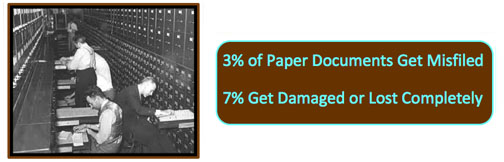

Budget | ||||||||||||||||||||||||
|
The first step is usually the hardest. 97% of companies do not know what is the total true cost to make a paper document let alone what would it cost to scan the document and store it. So it makes it hard to justify or prove financially that a document scanning business should be your partner as a managed service during these economic times or if you should trust your records management to the least experienced people and lowest paid members on your staff. Here is some food for thought. Should you pay to protect your business history? Who will be ultimately responsible if the only copy of a vital document is destroyed or missing? The price of boxed storage of files is identifiable, why not know the price tag of the most up-to-date filing arrangement available? | ||||||||||||||||||||||||
Time | ||||||||||||||||||||||||
|
Owners and managers recognize that multitasking is typical of today's workforce. To their disappointment, a 30 minute project can now take a couple of hours because of other business related distractions. Reports, meetings and returning emails take priority over company records and off-site storage.
However, there is always an assignment that will demand you have the right information right in front of you. Someone needs to gather it. Most of the time that same information needs to be shared. Now time is really money! How much will it cost for that project? Very few will ever find out. Even companies who have invested in a complete network infrastructure, multiple scanning devices and some kind of software come up short of time to maintain and organize all files on their server. It seems procrastination and strong opinions concerning quality control bottleneck the process of having accessible and retrievable documents anywhere worldwide within seconds. It can also be slowed further by fear of a few and no clear vision were the company is really going. Solution
|
Let Under Budget and On Time Scanning do a free demonstration. We will bring our own scanner and computer. You find the files. We hand you your new digital documents. We now can give you an estimate of the price and time to do the rest. Your next step is to craft a budget. Our next step is to generate a proposal that will keep your document scanning cost guaranteed under budget and on time. We will be your partner in designing the database tree for your electronic filing system. Since Information protection and security have become necessary to meet auditing requirements and industry compliance we will be there for you. You are now on your way to a document management solution.   |